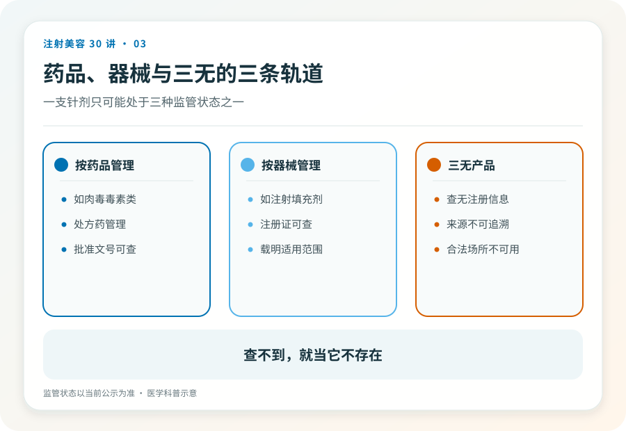
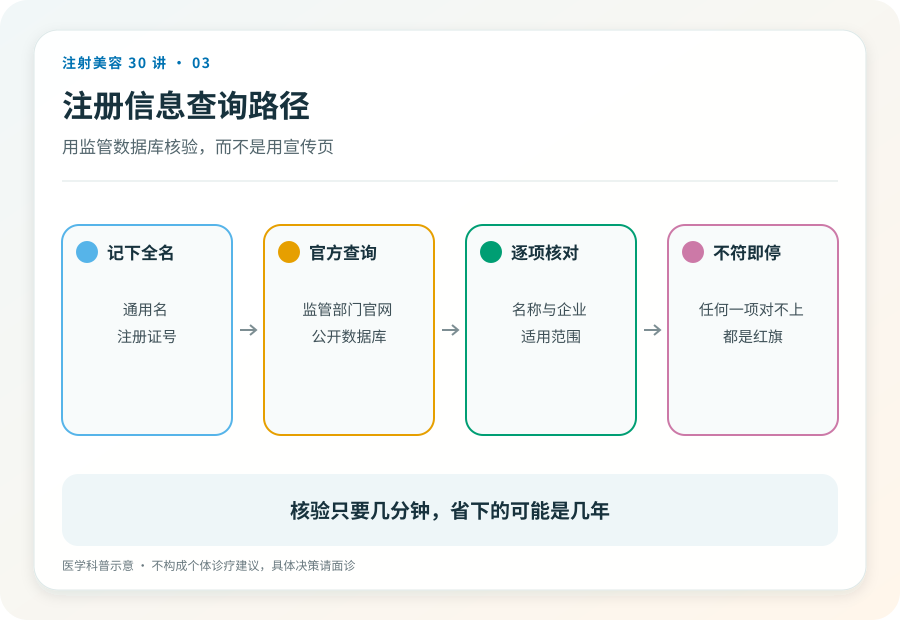

消费者认知起点
拿到一支针剂，多数人的第一反应是“这是正品吗”。但正品假货之争有一个前提，这个东西得先有一个合法的注射身份。
在中国，能合法注射进人体的产品只有两种身份，注册的药品（比如肉毒毒素，按处方药管理），或注册的医疗器械（比如多数填充剂）。查不到注册证的第三种东西，无论包装多精致、故事多动人，都是“三无”。对三无产品讨论真假没有意义。它连被造假的资格都没有。

01三条轨道，一目了然
药品轨，需要药品注册，处方药还需要医生处方，肉毒毒素在这条轨上。
器械轨，需要医疗器械注册，透明质酸填充剂、再生类材料多在这条轨上。
三无轨，以上两个数据库都查不到。它可能是走私品、假货、实验室产物，或者根本不该被注射的东西。
有一个反直觉的细节值得单独说，身份跟随使用方式改变。某些成分以化妆品身份存在时是合法的，一旦被抽进注射器打进皮肤，就越界了。“这个成分本身没问题”不能为“注射这个成分”辩护。
02“海外正品”话术拆解
水货针剂最常见的辩护是，在原产国是合法产品，只是没走进口流程。
这个辩护有两处断裂。第一，在原产国合法不等于在中国可注射，注册审查不是形式，它包含针对本地人群的安全性评估。第二，即使水货是真品，它也脱离了冷链与追溯体系；生物制品对储运条件敏感，一支在后备箱里颠簸过夏天的“正品”，和假货的风险可能没有本质区别。
假货的反义词不是正品，是可追溯，从工厂到你的皮肤，每一环都查得到。

03自己动手查，两分钟
国家药监局官网提供公开的数据查询入口，药品和医疗器械都能按名称或注册证编号检索。面诊时让机构出示产品注册信息，当场用手机查询比对。
查询是消费者唯一不依赖任何人的自保动作。它不需要医学知识，不需要人脉，不需要经验，只需要你愿意花两分钟。具体的当场核验动作清单，见第 23 篇。
04已经打了来源不明的产品怎么办
不要等出问题再处理。先到正规医疗机构就诊记录在案，说明注射时间与部位；保留剩余包装、批号照片与付款凭证。
无症状不等于安全，非法针剂的伤害可能有延迟性（第 17、21 篇会展开）。越早建档，未来无论就医还是维权都越主动。
05证据边界
产品注册状态是动态信息，本文写作时的查询路径与分类框架可能随监管调整，使用时以官方网站当前版本为准。
06延伸阅读
一支针剂在监管数据库里没有名字，它的风险就没有上限。
内容边界本文用于公众教育，不构成个体诊疗建议；具体适应证、风险与处置请由合格医生面诊判断。